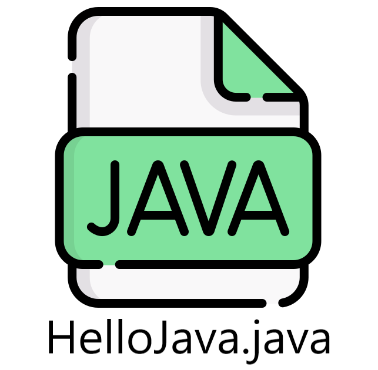

Aplicația "HelloJava"

În această secțiune, vom învăța cum să scriem cel mai simplu program Java. După instalarea JDK-ului(Java
Development Kit) putem
scrie cu ușurință orice program in Java.
Pentru a crea un program Java simplu, trebuie să creați o clasă care conține metoda "main". Termenul de
clasă și metodă sunt explicate în secțiuneaSă înțelegem
mai întâi cerința.
Cerințele pentru exemplul Hello Java
Pentru executarea oricărui program Java, trebuie instalate corect urmatoarele:
- Instalați JDK. Dacă nu l-ați instalat, descărcați JDK-ul de aici și instalați-l.
- Setați calea directorului jdk / bin. Tutorial
- Creați programul Java
- Compilați și rulați programul Java
Crearea primului program Hello Java
Să creăm programul HelloJava.
Pentru a scrie un program, trebuie să deschideți Notepad sau orice IDE(Integrated Development Environment)
cum ar fi Eclipse sau IntelliJ și să scrieți un program simplu așa cum am arătat mai jos:
HelloJava.java
class HelloJava{
public static void main(String args[]){
System.out.println("Hello World");
}
}
Salvați fișierul ca HelloJava.java.
Pentru a compila și rula programul de mai sus, trebuie să deschideți promptul de comandă(Command Prompt)
prin meniul Start
-> Toate programele -> Accesorii -> Command Prompt sau se scrie "cmd" in bara de adrese pentru a deschide
Command Prompt în folder-ul curent. Dacă se deschide Command Prompt din bara de start, va trebui schimbat
directorul folosind comanda "cd".
Când am terminat corect cu toți pașii, acesta arată
următoarea ieșire:
Odata deschis Command Prompt-ul, se va compila fisierul Java folosind comanda "javac" urmat de numele
fisierului.
După compilare, se va crea un fișier .class care se va executa folosind comanda "java" urmat de numele
fișierului nou creat.

Compilare:
javac HelloJava.java
Rulare:
java HelloJava
Afișare:
HelloJava
Când compilăm programul Java folosind tool-ul "javac", compilatorul Java convertește codul sursă în cod de octeți.

Parametrii utilizați în primul program Java
Să vedem care este semnificația cuvintelor class, public, static, void, main, String[],
System.out.println().
- class folosit pentru a declara o clasă în Java.
- public este un modificator de acces care reprezintă vizibilitate. Înseamnă că este vizibil pentru toți.
- static este un cuvânt cheie. Dacă declarăm orice metodă ca fiind statică, aceasta este cunoscută sub numele de "metodă statică". Avantajul principal al metodei statice este că nu este nevoie să creați un obiect pentru a invoca metoda statică. Metoda main() este executată de JVM, deci nu necesită crearea unui obiect pentru a invoca metoda main(). Deci, economisește memorie.
- void este tipul de returnare al metodei. Înseamnă că nu returnează nicio valoare.
- main reprezintă punctul de plecare al programului.
- String[] args sau String args[] este utilizat pentru argumentele din linia de comandă.
- System.out.println() este folosit pentru a imprima declarația. Aici, "System" este o clasă, "out" este un obiect al clasei "PrintStream", "println()" este o metodă a clasei "PrintStream".